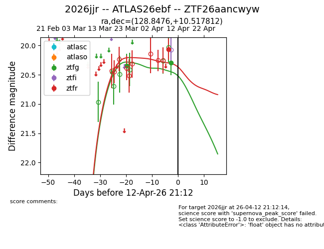
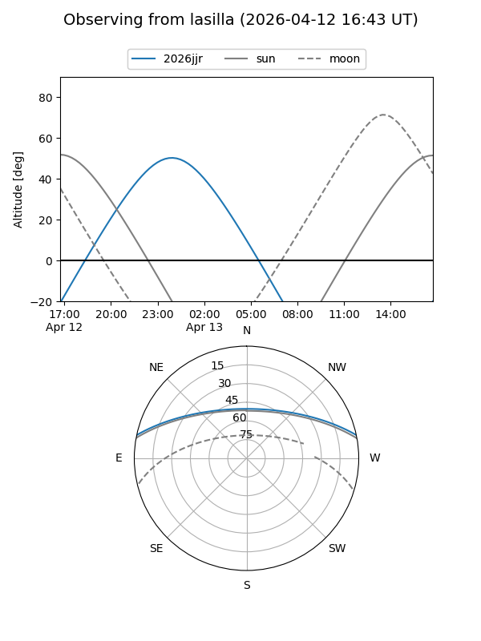
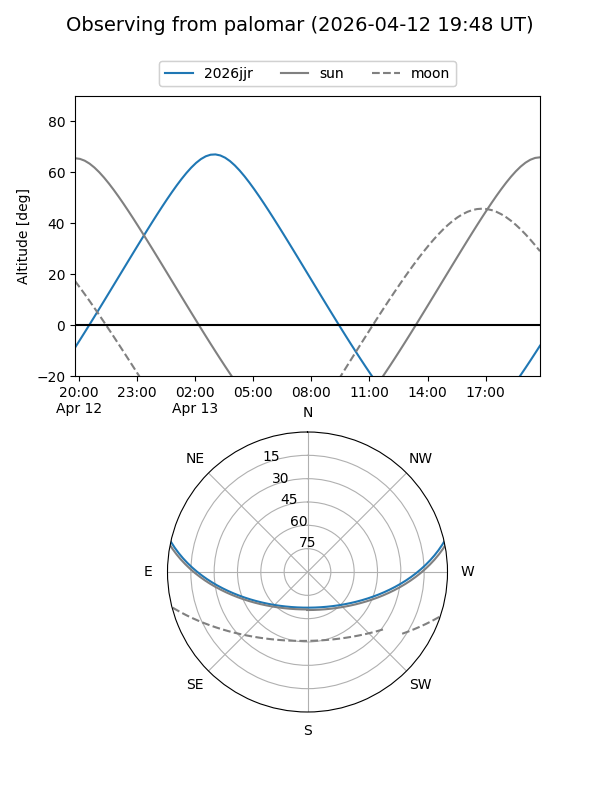
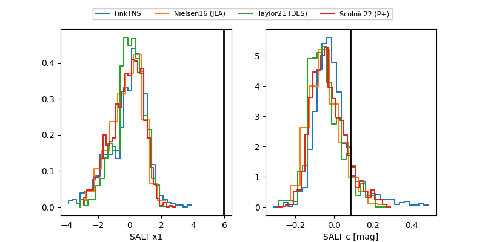

2026jjr
Target 2026jjr at 2026-04-12 21:26
Aliases and brokers:
FINK: link
Lasair: link
ALeRCE: link
TNS: link
YSE: link
alt names
ZTF26aancwyw (ztf,fink_ztf)
2026jjr (tns,yse)
ATLAS26ebf (atlas)
Coordinates:
equatorial (ra, dec) = 128.8476,+10.51781
equatorial (HMS+DMS) = 08:35:23.42,+10:31:04.12
galactic (l, b) = (215.1343,+27.81787)
Flags:
likely cv
Photometry:
last ztfg=20.29, ztfr=20.06
2 ztfg, 1 ztfr detections
Lightcurve

Visibility


Additional plots
